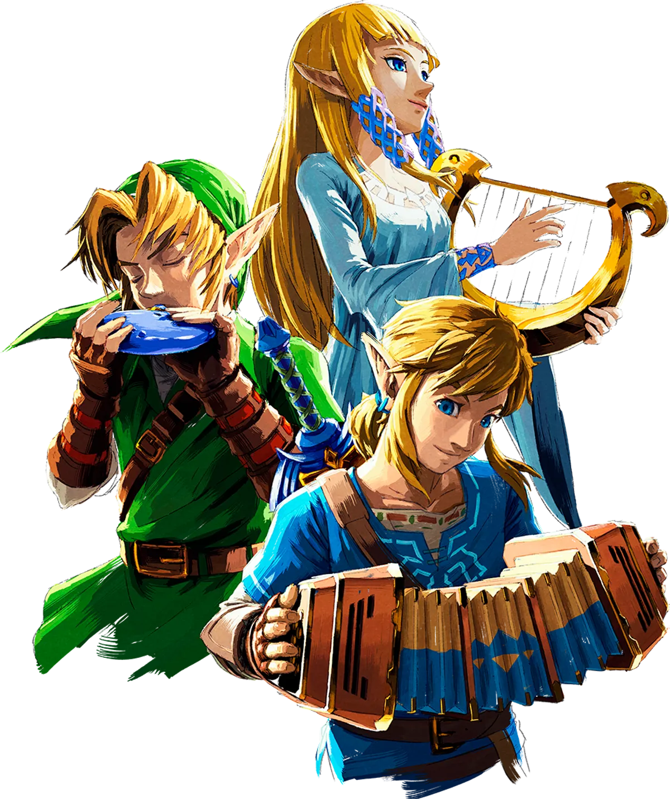

The legend of Zelda
Su historia:
The Legend of Zelda es una icónica franquicia creada por Nintendo que narra la historia de un reino amenazado por una oscuridad ancestral, destinada a renacer en un ciclo eterno por más veces que sea derrotada. Atrapado en este mismo bucle, el espíritu de un héroe y una princesa reencarnan una y otra vez para adentrarse en un vasto y mítico escenario, con la misión de devolverle la esperanza y la seguridad a su gente. Lo que su música transmite es una profunda nostalgia y un sentido de la aventura abrumador; transita con maestría desde melodías épicas de batallas legendarias hasta lamentos cargados de melancolía que recuerdan las glorias pasadas de un reino atrapado en un eterno limbo entre la vida y la muerte.

Su música:
Un claro ejemplo de esta maestría se refleja en el tema principal de una de sus entregas: "The legend of Zelda: Breath of the wild". Por primera vez, el héroe fracasa en su mision, quedando al borde de la muerte tras no poder proteger el reino. Para salvarlo, la princesa lo confía a un largo letargo en un santuario, mientras ella misma se sacrifica en cuerpo y alma para contener una maldad absoluta, esperando el día en que él despierte. Así, ambos quedan atrapados en un profundo sueño/limbo durante un siglo, hasta que el héroe regresa a la vida en un mundo devastado y en ruinas, completamente amnésico. Esto rompió con todas las reglas establecidas de la franquicia, demostrando que la victoria no siempre está garantizada. El juego arranca justo ahí: explorando un territorio desolado donde, a medida que el héroe explora este vasto desierto de recuerdos perdidos, la música evoca una pesada y extraña nostalgia por recuerdos que ni siquiera sabes si alguna vez poseíste, capturando a la perfección esa melancolía por lo que se fue y lo que nunca llegó a ser.